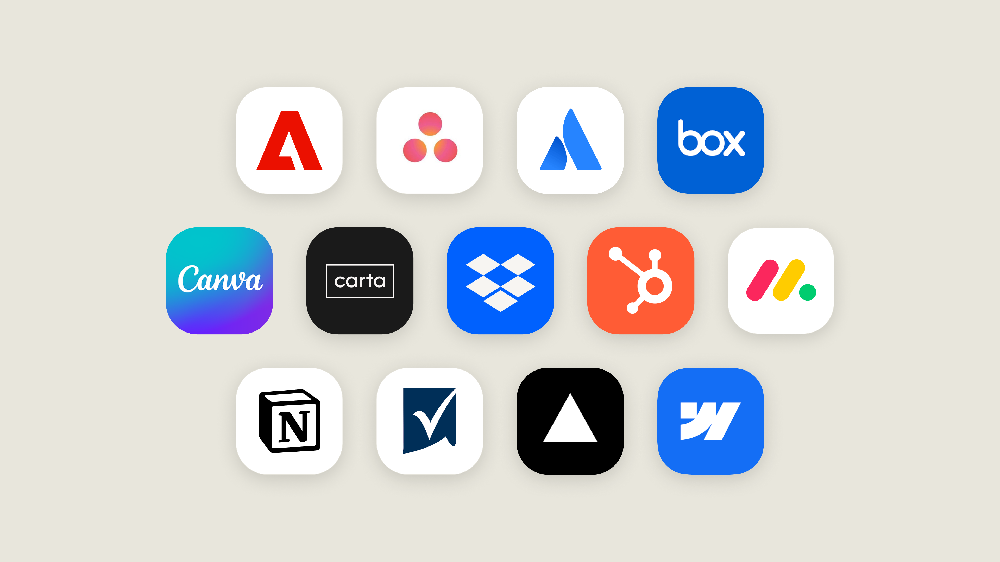

올해 초 저희는 도구의 작은 라이브 화면을 Claude 안으로 가져오는 인터랙티브 커넥터(interactive connectors)를 출시했습니다. 오늘부터는 커넥터가 지원하는 경우, 도구를 대화 옆에 열거나 전체 화면으로 펼친 뒤 Claude에게 함께 작업하며 직접 변경하도록 요청할 수 있습니다.
이 기능은 채팅과 Cowork를 하나로 합친 새로운 Claude 경험의 일부로, 웹과 Claude 데스크톱 앱에서 모든 플랜에 순차적으로 제공됩니다. 계정이 새 Claude로 업데이트되거나 조직에서 이를 켜면 이 기능들을 볼 수 있습니다.
새로워진 점:
먼저 디렉터리에 있는 일부 도구부터 시작합니다. Asana, Canva, Carta, Dropbox, monday.com, Smartsheet, Vercel, Webflow 등이 포함됩니다.
현재 Claude에서 사용할 수 있는 몇몇 도구로 할 수 있는 일은 다음과 같습니다.

Figma, Harvey, Shopify도 연동을 만들고 있으며, 다른 개발자들도 함께 만들어 주기를 바랍니다.
인터랙티브 커넥터는 MCP Apps 위에서 동작합니다. MCP Apps는 Model Context Protocol의 오픈 확장으로, MCP 서버가 자체 인터페이스를 AI 애플리케이션 안으로 가져올 수 있게 해 줍니다. 직접 만든 MCP App은 Claude에만 묶이지 않고, 이 확장을 지원하는 어떤 AI 애플리케이션에서도 실행할 수 있습니다.
지금까지 Claude의 MCP Apps는 주로 대화 안의 인터랙티브 뷰로 나타났습니다. 이제 Claude는 앱 도구(app tools)와 임베드 사이트(embedded sites) 등 확장의 더 많은 부분을 지원하므로, 개발자의 앱 전체가 Claude 안에서 실행될 수 있습니다.
이 기능들은 개발자용 퍼블릭 프리뷰로 지원되며, 개발자는 오늘부터 이를 활용해 개발을 시작할 수 있습니다. 개발을 시작하려면 문서를 읽어 보세요.
위에서 언급한 도구들은 디렉터리에서 연결할 수 있으며, 연결한 뒤에는 채팅에서 어떤 도구든 열거나 사이드바에 고정할 수 있습니다.
관리자라면: 조직에서 이미 커넥터의 모든 도구를 허용하고 있다면, 새 기능이 출시되는 대로 나타납니다. 관리자는 지금과 같은 방식으로 커넥터의 도구를 제한할 수 있습니다.